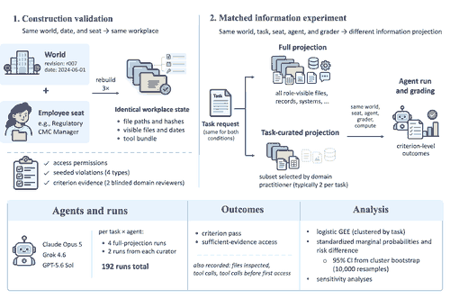

WorkWorlds: An Infrastructure for Evaluating AI Agents on Workplace Tasks
Yining Hua · Harvard University · Agent Evaluation Science Inc. Levi Lian · Raycaster · Stanford University
WorkWorlds fixes the organization before the task. A world first fixes a revision, date, and employee seat and materializes the role-visible workplace. The task is introduced only after that projection is fixed, allowing workplace structure and information exposure to be varied without rebuilding the organization around each assignment.
Persistent organizational world → role-visible employee projection → task overlay → execution and grading.
Infrastructure · Workplace agents · Evaluation
Build the workplace before the benchmark task
Release
The measured study uses PharmaCo, a fictional sterile-injectable pharmaceutical company. Employees, roles, permissions, products, records, systems, and prior events persist across assignments. The same organization can then be materialized for different employee seats and points in company history.
WorkWorlds was developed through a research collaboration with Raycaster and within Raycaster's broader ecosystem for building and evaluating agent systems. The collaboration supported infrastructure development and access to real-world organizational data and source materials supplied through third-party data-provider relationships. These materials informed the research environments; PharmaCo and the other named worlds are fictionalized research constructions.
1 worldFrozen PharmaCo revision used for the measured eight-task panel.
6 seatsEmployee-specific projections determine what each agent can see.
3 rebuildsClean construction rebuilds were identical under the frozen inputs.
Matched information experiment

Construction validation tests reproducibility; the matched experiment varies only the information projection while holding the world, task, seat, agent, and grader fixed.
Matched study · Information environment · GEE
Task curation changes what the evaluation measures
192 runs
Each evaluation is matched on world, task, employee seat, agent configuration, source bytes, and grader. The comparison changes only the information projection: the complete role-visible workplace versus a task-curated subset selected from the same projection.
90.4 → 72.8%Sufficient-evidence access, task-curated subset → full projection.
76.7 → 68.0%Criterion pass, task-curated subset → full projection.
82.7 vs 84.2%Pass given observed evidence access was similar across conditions.
How to read this: arrows run from the task-curated subset to the full role-visible workplace. The higher values under curation do not indicate a better agent; they show that pre-selecting task-relevant information removes part of the information-localization work and raises measured performance. When that curation is removed, evidence access falls by 17.6 percentage points and criterion pass falls by 8.7 points. Conditional pass is similar once sufficient evidence is reached, so the measured separation is concentrated in whether the agent reaches that evidence. The three tabs below correspond directly to the three interactive rows in the table; selecting either updates the same outcome view.
Key matched-information outcomes. Read left to right as task-curated subset → full projection.
Outcome
Task-curated
Full projection
Change to full
Sufficient-evidence access
90.4%
72.8%
-17.6 pp
Criterion pass
76.7%
68.0%
-8.7 pp
Pass given observed access
82.7%
84.2%
+1.5 pp
Mean file / record inspections
15.2
28.6
+13.4
Reproducibility & materials
Public release
One release connects the reported results to the underlying ledgers and analysis.
The frozen release contains the 192 completed runs and 1,728 criterion executions used in the paper, the statistical pipeline that recomputes the reported GEE-standardized probabilities and task-cluster bootstrap intervals, and a fictional public-safe implementation of the WorkWorlds construction contract. The measured PharmaCo organizational corpus, restricted source materials, third-party provider data, held-out verifier evidence, and raw organizational trajectories are outside the public release.
Collaboration & provenance
Developed with Raycaster's research and data ecosystem.
WorkWorlds was produced through a research collaboration with Raycaster and developed within Raycaster's broader ecosystem for building and evaluating agent systems. The work used real-world organizational data and source materials made available through third-party data-provider relationships to inform environment construction and validation. The named organizational worlds are fictionalized research environments, and restricted provider materials are excluded from this public release.
Data rights & disclaimer
Public artifacts and third-party source materials have separate rights.
Third-party source materials remain subject to applicable provider agreements, licenses, confidentiality obligations, and other rights. CC BY 4.0 applies only to material in this public release for which the authors have the right to grant that license. No data provider is represented as endorsing the paper, its findings, or this release unless expressly stated. The release is provided for research and evaluation purposes on an as-is basis, without warranties of accuracy, completeness, fitness for a particular purpose, or non-infringement. To the extent permitted by applicable law, the authors, their institutions, Agent Evaluation Science Inc., Raycaster, and participating data providers are not responsible for losses or liabilities arising from use of, reliance on, or deployment based on this release.
Paper & citation
Preprint
WorkWorlds: An Infrastructure for Evaluating AI Agents on Workplace Tasks
Yining Hua (Harvard University; Agent Evaluation Science Inc.) and Levi Lian (Raycaster; Stanford University). The stable arXiv link resolves to the latest version of the paper.
@misc{hua2026workworlds,
title = {WorkWorlds: An Infrastructure for Evaluating AI Agents on Workplace Tasks},
author = {Yining Hua and Levi Lian},
year = {2026},
eprint = {2609.23806},
archivePrefix= {arXiv},
primaryClass = {cs.AI},
url = {https://arxiv.org/abs/2609.23806}
}
Deploy
Bring WorkWorlds to an industry setting.
Interested in deploying an industry-scale evaluation environment inside your organization? Contact us to discuss adapting the infrastructure to your workflows, permissions, internal systems, and evaluation needs.
Reproduce
One command checks the release and recomputes the analysis.
Python 3.10+ is recommended. The verification target checks ledger counts, reference tests, seeded isolation adversaries, and the released statistical analysis.